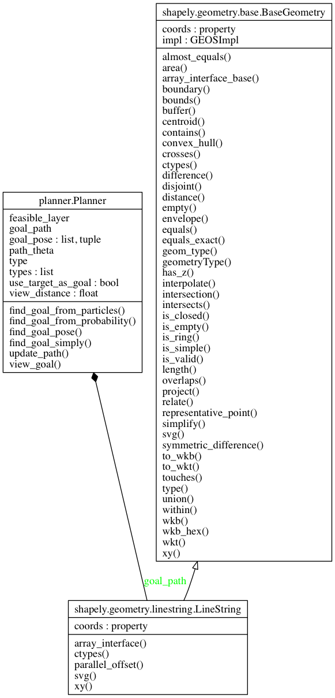

Planner module¶
The planner module manages goals and goal paths for the robot.
The planner can be either: simple, in which it picks a random feasible point on the map as a goal pose; particle-based, in which it selects a goal pose from a particle cloud; or probability-based, in which it selects a goal pose from a continuous probability distribution.
The goal path generated uses the A* planning algorithm, and the goal pose is generated as the best location from which the robot can view its target.
- class Planner(type_, feasible_layer, view_distance=0.3, use_target_as_goal=True)[source]¶
Bases: object
The planner class generates goal poses and paths for a robot.
The goal poses are generated either as the exact target pose, or as a view pose from which to see the target. Goal paths are generated as a deterministic path from the robot’s current location to the goal pose.
- types¶
{‘simple’,’particle’,’MAP’}
A collection of all methods in which the goal planner finds its goal point:
- a simple planner randomly picks a point in the feasible
region; * a particle planner selects the particle with greatest probability (or randomly selects from the particles that share the greatest probability if more than one exists.) * a MAP or maximum a posteriori planner uses the point of greatest posterior probability as the goal point.
Parameters: - type ({‘simple’,’particle’,’MAP’}) – The choice of planner type.
- feasible_layer (FeasibleLayer) – A layer object providing both permissible point regions for any object and permissible pose regions for any robot with physical dimensions.
- view_distance (float, optional) – The distance in meters from the target goal to place the view goal. Default is 0.3m.
- use_target_as_goal (bool, optional) – Use the target location as a goal, rather than using a view pose as the goal.
- find_goal_from_particles(fusion_engine)[source]¶
Find a goal from the most likely particle(s).
Find a goal pose taken from the particle with the greatest associated probability. If multiple particles share the maximum probability, the goal pose will be randomly selected from those particles.
Parameters: fusion_engine (FusionEngine) – A fusion engine with a particle filter. Returns: A pose as [x,y,theta] in [m,m,degrees]. Return type: array_like
- find_goal_from_probability(fusion_engine)[source]¶
- Find a goal pose from the point of highest probability (the
- Maximum A Posteriori, or MAP, point).
Parameters: fusion_engine (FusionEngine) – A fusion engine with a probabilistic filter. Returns: A pose as [x,y,theta] in [m,m,degrees]. Return type: array_like
- find_goal_pose(fusion_engine=None)[source]¶
Find a goal pose, agnostic of planner type.
Parameters: fusion_engine (FusionEngine, optional) – If using a non-simple planner, a provided fusion engine is used to generate the goal poses. Defaults to None, using a simple planners. Returns: A pose as [x,y,theta] in [m,m,degrees]. Return type: array_like
- find_goal_simply()[source]¶
Find a random goal pose on the map.
Find a random goal pose within map boundaries, residing in the feasible pose regions associated with the map.
Returns: A pose as [x,y,theta] in [m,m,degrees]. Return type: array_like
- types = ['simple', 'particle', 'MAP']
- update_path(current_pose, goal_pose=None)[source]¶
Find path to a goal_pose, agnostic of planner type.
Parameters: - current_pose (array_like) – The robot’s current pose as [x,y,theta] in [m,m,degrees].
- goal_pose (array_like, optional) – The goal pose as [x,y,theta] in [m,m,degrees] used to generate the path. Defaults to None which uses the planner’s current goal pose.
Returns: Returns both a complete goal path (as a Shapely LineString) and the angle between the robot’s current pose and the first path segment.
Return type: array_like
- view_goal(target_pose)[source]¶
Generate a goal as a view pose from which to see the target.
Translate a target’s position to a feasible goal pose for the robot, such that the robot can easily see the target. It is not expected that the target’s heading matters (i.e. the view pose need only capture the target, not the target from any side).
Parameters: target_pose (array_like) – The target pose as [x,y,theta] in [m,m,degrees]. Returns: A pose as [x,y,theta] in [m,m,degrees]. Return type: array_like